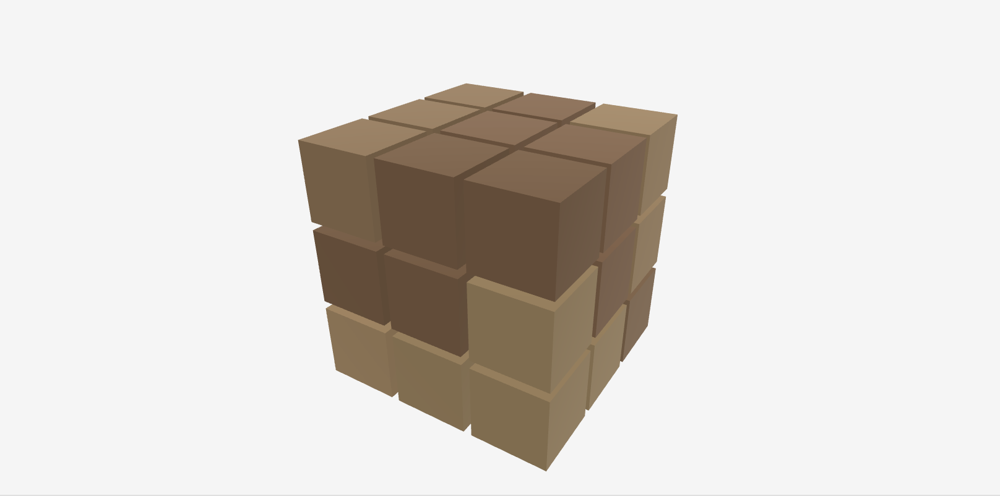
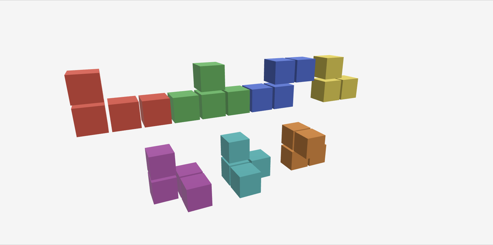
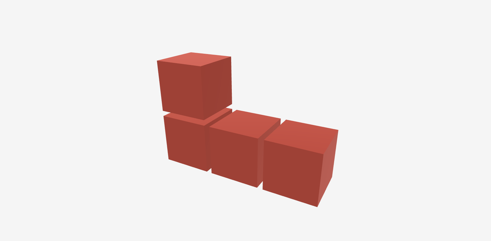
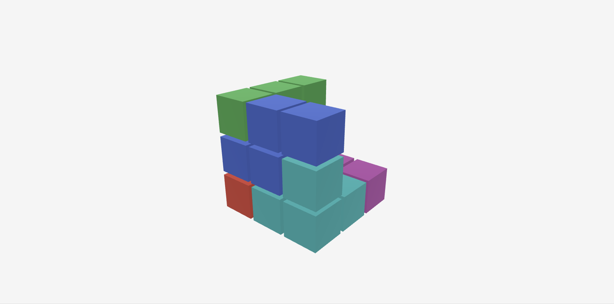
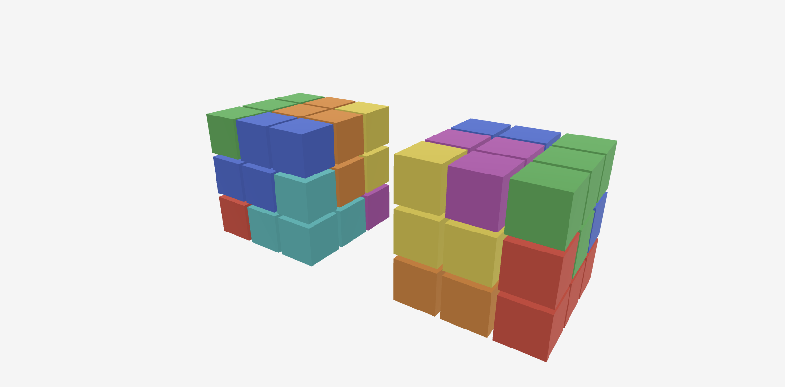
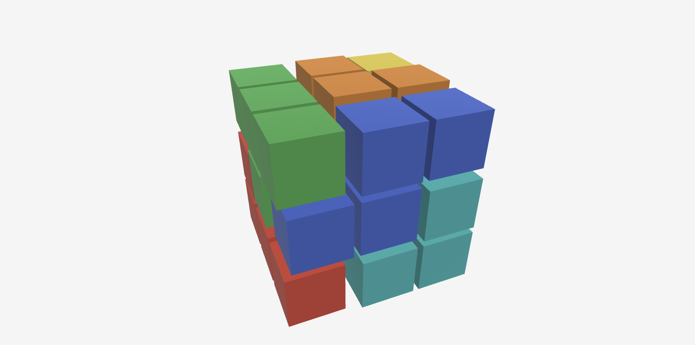
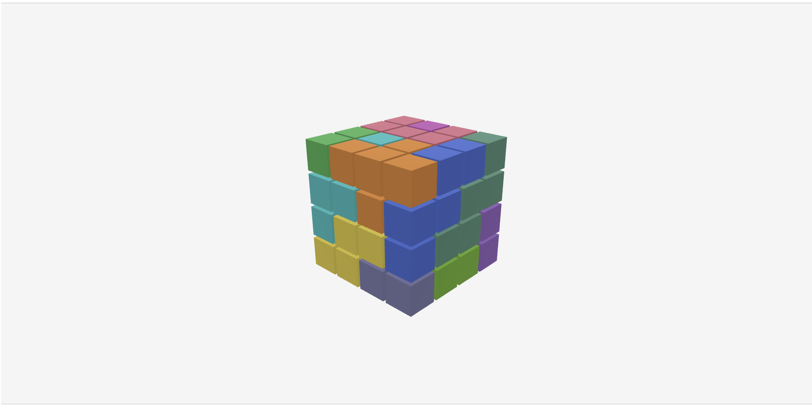

Solving Soma
Years ago in New York City’s Bryant park I came across a pop up store that sold puzzles, one of which was this wooden cube. I didn’t know what it was back then, but simplicity of the puzzle and the feel of the wooden blocks was attractive to me and so I bought it.

Hold and drag a piece, spread to explode
For the last decade or so it’s been on my desk. Occasionally I take it apart and challenge myself to assemble it. It can take anywhere from 30 seconds to 30 minutes depending on how lucky I am with the initial placement.
Looking for further esoteric and probably-useless topics to dive deep into and blog about, I decided to try my hand at writing a solver for this puzzle.
High-Level Approach
The first naive thing I thought of was a sort of backtracking algorithm, placing piece by piece until a cube was formed. The algorithm would move through each non-negative (x,y,z) coordinate and try to place a piece. If a piece couldn’t be placed (because it was out of bounds or colliding with another piece), it would be rotated until it could either be placed or until the next piece could be tried. That pattern would repeat for each unoccupied cell of the cube’s space until the last piece could be placed. Being able to place the last piece without collision means that a valid solution has been found.
Data Representation
Piece Coordinates
Each piece is represented as an array of (x,y,z) coordinates, normalized to the origin of the grid, i.e. each starting from (0,0,0), and with their shape extending positively along each axis. I did this for simplicity because I had the puzzle in front of me while trying to encode each shape.
pub type Coord = (i32, i32, i32);
pub const PIECES: &[&[Coord]] = &[
&[(0, 0, 0), (1, 0, 0), (2, 0, 0), (0, 1, 0)],
&[(0, 0, 0), (1, 0, 0), (2, 0, 0), (1, 1, 0)],
&[(0, 0, 0), (1, 0, 0), (1, 1, 0), (2, 1, 0)],
&[(0, 0, 0), (1, 0, 0), (0, 1, 0)],
&[(0, 0, 0), (1, 0, 0), (0, 1, 0), (1, 0, 1)],
&[(0, 0, 0), (1, 0, 0), (0, 1, 0), (0, 0, 1)],
&[(0, 0, 0), (1, 0, 0), (0, 1, 0), (0, 1, 1)],
];
Piece Orientations
In order to test each piece’s placement in a particular cell, we need to generate all possible rotations, of which there are 24.
pub const ROTATIONS: [fn(Coord) -> Coord; 24] = [
// +z face up, rotate around z axis
|(x, y, z)| (x, y, z), // 0 degrees
|(x, y, z)| (-y, x, z), // 90 degrees
|(x, y, z)| (-x, -y, z), // 180 degrees
|(x, y, z)| (y, -x, z), // 270 degrees
// +y face up, rotate around y axis
|(x, y, z)| (x, -z, y),
|(x, y, z)| (z, x, y),
// ... all of the other rotations
];
pub fn all_orientations(piece: &[Coord]) -> Vec<Vec<Coord>> {
let mut orientations: Vec<Vec<Coord>> = ROTATIONS
.iter()
.map(|rotate| {
let rotated_coords: Vec<Coord> = piece
.iter()
.map(|&coord| rotate(coord))
.collect();
normalize_to_origin(rotated_coords)
})
.collect();
orientations.sort();
orientations.dedup();
orientations
}
Normalizing a piece to the origin sets us up for sorting and deduplication:
fn normalize_to_origin(mut coords: Vec<Coord>) -> Vec<Coord> {
let min_x = coords.iter().map(|(x, _, _)| *x).min().unwrap();
let min_y = coords.iter().map(|(_, y, _)| *y).min().unwrap();
let min_z = coords.iter().map(|(_, _, z)| *z).min().unwrap();
for (x, y, z) in &mut coords {
*x -= min_x;
*y -= min_y;
*z -= min_z;
}
coords
}Placement Encoding
In order to easily and efficiently check for collisions and occupancy of cells, we represent coordinates as indices ranging from 0-26.
pub const fn coord_to_idx(x: i32, y: i32, z: i32) -> usize {
(x * 9 + y * 3 + z) as usize
}
pub const fn idx_to_coord(cell_index: usize) -> Coord {
(
(cell_index / 9) as i32,
((cell_index / 3) % 3) as i32,
(cell_index % 3) as i32,
)
}This lets us use a bitmask in order to tell if a cell is occupied. For example, a small L piece with an occupied position of [(0, 0, 0), (1, 0, 0), (0, 1, 0)] would have a bitmask of 0b1000001001. If we try to place another piece that would occupy the (0,0,0) cell, coordinates1 & coordinates2 would return a bitmask that is non-zero and indicate a collision.
Now we can represent a placement as a struct with the bitmask encoding of position, a coordinate representation of the piece to construct final solutions, and a count of the number of cubes to bound the iteration on the cube positions:
/// a piece orientation: cube positions after rotation and normalization
type Orientation = Vec<Coord>;
/// all valid placements for one piece at a specific target cell
type CellPlacements = Vec<Placement>;
/// lookup table indexed by `[piece_index][cell_index]`
type PlacementTable = Vec<Vec<CellPlacements>>;
struct Placement {
/// bitmask where bit `i` is set if cell `i` is occupied by this placement
occupied_mask: u32,
/// absolute coordinates of each cube in the grid
cube_positions: [Coord; MAX_CUBES_PER_PIECE],
/// number of cubes in this piece (3 or 4)
cube_count: u8,
}Precomputing Valid Placements
With this, we can now check and construct partial solutions. try_create_placement takes a piece in a particular orientation (normalized) and tries to place its anchor point at a target location. An anchor is simply one of the cubes a particular piece is comprised of. Placing a piece in a target cell relative to some anchor means that the anchor cube is meant to be placed in that target cell. To see if a piece can be placed at the target relative to its anchor, it calculates each cube’s absolute position, makes sure no component is out of bounds and, if in bounds, returns that placement containing its collision bitmask.
fn try_create_placement(
orientation: &Orientation,
target: Coord,
anchor: Coord,
) -> Option<Placement> {
let mut occupied_mask = 0u32;
let mut cube_positions = [(0, 0, 0); MAX_CUBES_PER_PIECE];
let offset = (
target.0 - anchor.0,
target.1 - anchor.1,
target.2 - anchor.2,
);
for (cube_index, &(piece_x, piece_y, piece_z)) in
orientation.iter().enumerate()
{
let absolute_x = piece_x + offset.0;
let absolute_y = piece_y + offset.1;
let absolute_z = piece_z + offset.2;
// check if this cube is within the 3x3x3 grid bounds
if !(0..3).contains(&absolute_x)
|| !(0..3).contains(&absolute_y)
|| !(0..3).contains(&absolute_z)
{
return None;
}
let idx = coord_to_idx(absolute_x, absolute_y, absolute_z);
occupied_mask |= 1 << idx;
cube_positions[cube_index] = (absolute_x, absolute_y, absolute_z);
}
Some(Placement {
occupied_mask,
cube_positions,
cube_count: orientation.len() as u8,
})
}try_create_placement is called for all pieces in all orientations to generate a table of placements in build_placement_table. The purpose of build_placement_table is simply to generate an account of all valid ways you can place each piece within the 3x3x3 grid by itself without going out of bounds, i.e. without considering any collisions. To do so, it iterates over all orientations and placements for each possible piece, anchor point, and target cell.
fn build_placement_table(pieces: &[&[Coord]]) -> PlacementTable {
let piece_orientations: Vec<Vec<Orientation>> =
pieces.iter().map(|piece| all_orientations(piece)).collect();
piece_orientations
.iter()
.map(|orientations| {
(0..GRID_SIZE)
.map(|target_cell| {
let target_position = idx_to_coord(target_cell);
let mut placements = Vec::new();
for orientation in orientations {
for &anchor in orientation {
if let Some(placement) =
try_create_placement(orientation, target_position, anchor)
{
placements.push(placement);
}
}
}
placements
})
.collect()
})
.collect()
}The Search
Now that we have a table that can iterate over all valid placements, we can conduct the search. As mentioned earlier, this is going to take the form of a backtracking / depth-first-search algortihm which will attempt to advance the search for a valid solution and, if we are unable to advance, rewind the stack to the last decision point (piece/orientation) and try another path.

Search Setup
First is the setup:
let placement_table = build_placement_table(pieces);
let num_pieces = pieces.len();
let mut solutions = Vec::new();
let mut seen_states: FxHashSet<GridKey> = FxHashSet::default();seen_states lets us avoid traversing down symmetric search branches (solutions can be symmetric by rotation and reflection), which would overcount and slow down the search.
To keep track of our search, we’ll maintain a stack with a snapshot of the partial solution:
struct PartialSolution {
// pieces placed so far in this search path
placed_pieces: [PlacedPiece; MAX_PIECES],
// number of pieces placed
placed_count: usize,
// bitmask of available pieces
remaining_pieces: u8,
// bitmask of filled cells
occupied_cells: u32,
// which piece we're trying
current_piece_idx: usize,
// which orientation we're on
current_orientation_index: usize,
}The search begins by pushing an initial partial solution onto the stack:
let initial_remaining = (1u8 << num_pieces) - 1;
let empty_piece: PlacedPiece =
(0, [(0, 0, 0); MAX_CUBES_PER_PIECE], 0);
let mut search_stack = vec![PartialSolution {
placed_pieces: [empty_piece; MAX_PIECES],
placed_count: 0,
remaining_pieces: initial_remaining,
occupied_cells: 0,
current_piece_idx: 0,
current_orientation_index: 0,
}];Finding Empty Cells
The search starts by popping the next partial solution from the stack and tries to extend it by placing a piece in the first available location. If there are no more empty cells, that means we found a valid solution:
while let Some(mut partial) = search_stack.pop() {
let target_cell = match find_first_empty_cell(partial.occupied_cells) {
Some(cell) => cell,
None => {
let solution = partial.placed_pieces
[..partial.placed_count].to_vec();
solutions.push(solution);
continue;
}
};
// ...
}Trying Pieces
Next is to try placing each remaining piece at that target cell, using the placement table:
'pieces: loop {
// find the next available piece, starting from current_piece_idx
let Some(piece_index) = (partial.current_piece_idx..num_pieces)
.find(|&i| (partial.remaining_pieces & (1 << i)) != 0)
else {
break 'pieces;
};
partial.current_piece_idx = piece_index;
let valid_placements = &placement_table[piece_index][target_cell];
// ...
}Collision Detection
For each piece, the valid placement table gives us all of the orientations that piece can be placed in the target cell. For each of those orientations, we run a collision check using the bitmask to quickly know if we can continue adding pieces or must backtrack:
// try each orientation of this piece at the target cell
while partial.current_orientation_index < valid_placements.len() {
let placement = &valid_placements[partial.current_orientation_index];
partial.current_orientation_index += 1;
// fast collision check using bitmask AND
if (partial.occupied_cells & placement.occupied_mask) != 0 {
continue;
}Advancing the Search
If there is no collision, we can push the updated state of the search onto the stack:
let new_occupied = partial.occupied_cells | placement.occupied_mask;
let new_piece: PlacedPiece =
(piece_index, placement.cube_positions, placement.cube_count);
let mut new_placed = partial.placed_pieces;
new_placed[partial.placed_count] = new_piece;
let new_count = partial.placed_count + 1;
// skip if we've seen this state under any rotation or reflection
let canonical = canonical_key(&new_placed[..new_count]);
if seen_states.contains(&canonical) {
continue;
}
seen_states.insert(canonical);
// remove the placed piece from remaining (flip bit off)
let new_remaining = partial.remaining_pieces & !(1 << piece_index);
// save current partial solution for backtracking, then push new state
search_stack.push(partial);
search_stack.push(PartialSolution {
placed_pieces: new_placed,
placed_count: new_count,
remaining_pieces: new_remaining,
occupied_cells: new_occupied,
current_piece_idx: 0,
current_orientation_index: 0,
});
// placed a piece successfully, explore this branch
break 'pieces;Eliminating Duplicate Solutions
You may have noticed the check for partial solutions already explored. There are many possible rotational equivalents (24x) and chiral equivalents (2x) that we can encounter in the search, so canonical_key finds a stable representative of all rotational and chiral equivalent solutions in order to break early and avoid duplicating work:
pub fn canonical_key(solution: &[PlacedPiece]) -> GridKey {
let grid_key = grid_to_key(&solution_to_grid(solution));
find_smallest_rotation_with_reflection(&grid_key)
}All this does is create a grid representation of the solution and then construct the lexicographically-smallest representation of that grid, which gives us a stable key by which to compare partial solutions.

With this, we now have the final result, which is 240 asymmetric solutions. On my macbook air, the search for all solutions takes ~80ms. You can view all of the code from this blog post here.

Afterword
Wondering what other fun things I could do and visualize and animate. I wondered about generalizing the solver with the Bedlam cube as the next candidate. The Bedlam cube is another polycube (twelve pentacubes and one tetracube), with 4x4x4 dimensions and 19,186 solutions, making for a much more complicated puzzle. To support this involved combing through all of the portions of the code that hardcoded anything related to Soma and parameterizing it by things like max piece size, number of pieces, cube dimensions, etc. With that, the solver is now generic for cubic dissection puzzles; you can find the updates to the solver in the repo here.

Further Reading
When writing this blog post, I actually had no idea the puzzle on my desk was called a Soma cube. After finding out and doing some digging I found this wonderful blog post by Aswin van Woudenberg explaining a similar approach in Python. I’m only slightly sad I didn’t think of this first. His blog is full of programmatic puzzle solutions and I encourage you to check it out! And after implementing the generic solver, I found even more resources on this topic, which really does seem beaten to death by this point. There is another incredibly detailed post by Matt Busche, where he shares several approaches and optimization techniques to solving these puzzles, including the ones I took: hole-filling backtracking coupled with bitfields and rotational symmetry pruning. On top of that, this polycube solving problem (another term I hadn’t known) can be modeled as an exact cover problem (thanks Donald Knuth!).